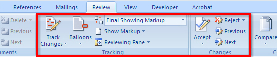
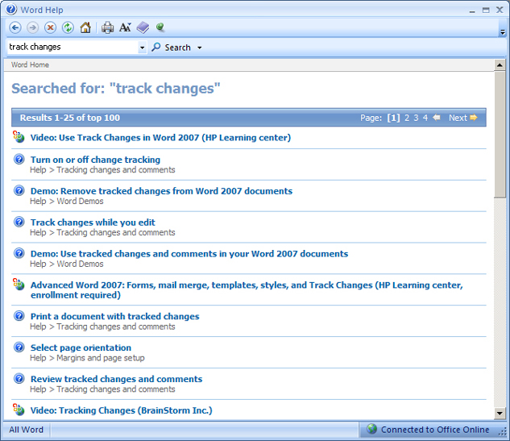
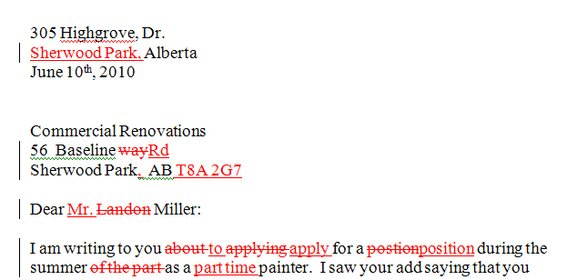

When turned on, Track Changes will mark and highlight any change you or others make to a document. When you add text, Track Changes shows the text as coloured and underlined. When you delete text, you can still see it, but it is marked as strikethrough so you can see exactly what was deleted. You can access Track Changes and all its features in the Tracking group in the Review tab on the ribbon in Microsoft Word 2007. Once you have turned on Track Changes and edited a document, use the Changes group to navigate the changes, and Accept or Reject the changes made.

Microsoft product screen shot(s) reprinted with permission from Microsoft Corporation.
Microsoft Word Help is great resource for finding information for all your software questions. Go to the help menu and key-word search “Track Changes” to watch a Demo (Use tracked changes and comments in your Word 2007 documents.)

Microsoft product screen shot(s) reprinted with permission from Microsoft Corporation.
Look at the following document, edited with Track Changes, to see the additions and deletions.
